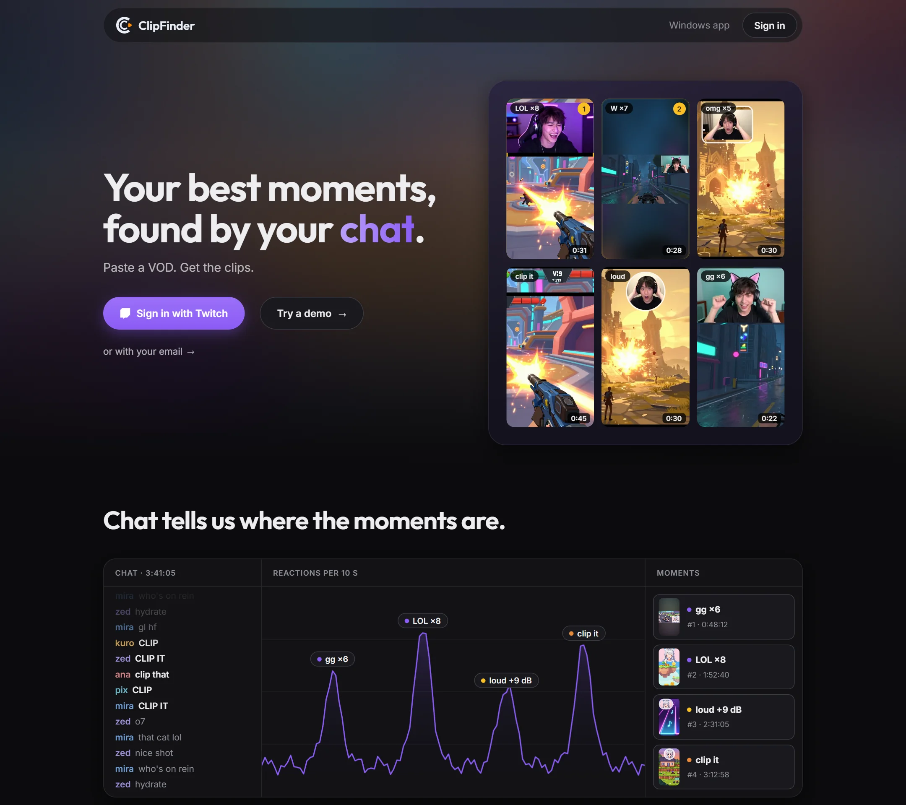
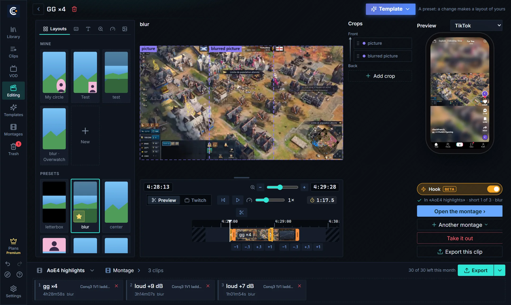
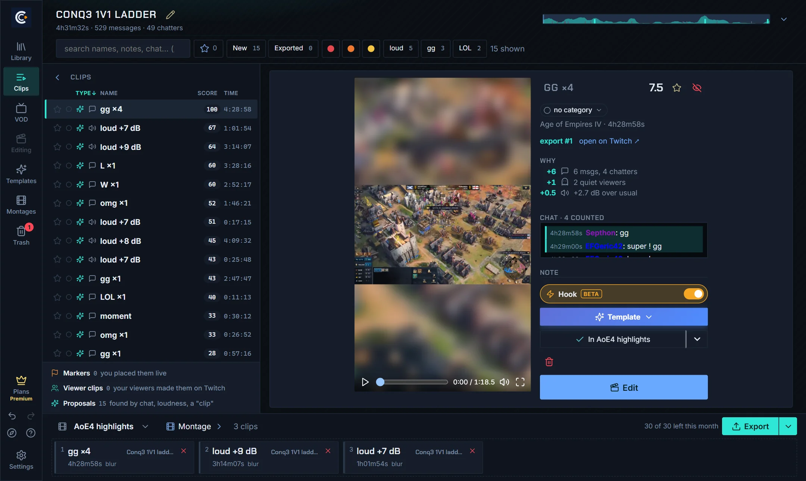
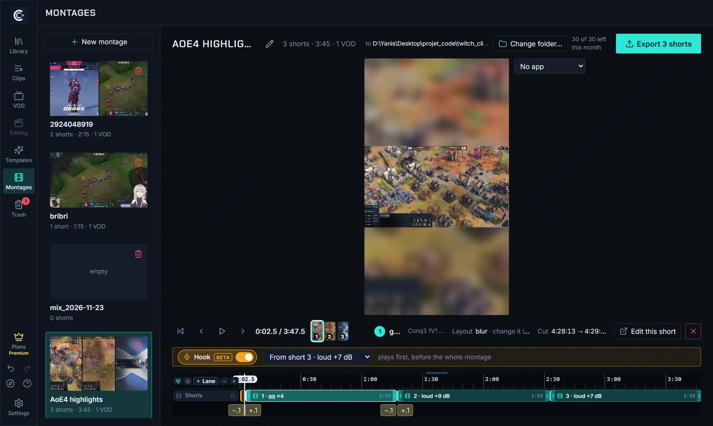

Personal project · 2026–now
ClipFinder
A stream lasts eight hours; the clip worth posting lasts thirty seconds. ClipFinder finds those seconds by reading the chat instead of watching the video, then lets the streamer cut, frame and export them as vertical shorts.

About the project
Streamers lose hours scrubbing through their own VODs to find clips for TikTok and Shorts. The video is heavy, but the chat is light, and the chat already knows where the moments are: it explodes in caps, emotes and "LOL" a few seconds after something happens. ClipFinder downloads only the chat (a few MB for an eight-hour stream), turns it into a reaction signal and ranks the peaks.
The ranking is a real pipeline, not a keyword count. Every message is scored against a
vocabulary of reaction categories, the signal is compared to its own rolling baseline
(median and MAD over 30 minutes) and peaks are picked with scipy.find_peaks.
Filters then drop what only looks like a reaction: bot spam, copypasta, raids and the
thank-you waves after a sub. Other signals join in when they are available: how loud the
stream got, the markers the streamer placed live, Nightbot counters, and the streamer's own
microphone (screams, strong words, a spoken "clip that").
Every setting was decided by a number, never by feel. The clips viewers actually made on
Twitch are the only ground truth, so a bench command re-ranks a labelled set of
VODs and reports where each viewer clip landed. Measured against StreamLadder's ClipGPT on
the same 15 VODs, ClipFinder put 11 viewer clips in its top 10, against 5,
with 40% less video to review.
Main features
-
Moments from the chat
Paste a VOD link and get a ranked list in about a minute, each moment with the reason it ranked: the messages, the loudness, the marker.
-
Viewer clips & markers
Signed in with Twitch, the clips viewers made and the markers placed live join the list, matched to the moments the chat found.
-
A 9:16 editor
Layouts and crops for the game and the facecam, captions, texts, images, speed ramps and a hook, with a live phone preview.
-
Montages
Clips from any VOD, in your order, on a multi-lane timeline with snap points, locked and muted lanes.
-
Export, mp4 or DaVinci
A ready-to-post 9:16 mp4, or one DaVinci Resolve timeline per clip (FCPXML + subtitles) with 1080p60 sources, already framed.
-
Undo everything
Every edit can be undone and redone, even after a reload; deleted VODs wait 30 days in a trash. Keyboard-first, from i / o to split.
Screenshots



Tech stack
A Python 3.12 core (pandas, NumPy, SciPy) behind a Typer CLI and a FastAPI server. The interface is a single vanilla JavaScript page, no framework and no build step, shipped as a Windows app (PyInstaller + pywebview) that bundles ffmpeg, TwitchDownloaderCLI and a local speech-to-text model (SenseVoice via sherpa-onnx, whisper.cpp before it), so the streamer's voice never leaves their PC. The same code runs a free website on an Oracle Cloud ARM server behind Caddy, with Twitch OAuth and a daily export quota. Exports are ffmpeg filter graphs and hand-written FCPXML that DaVinci Resolve opens as timelines. About 1,700 tests, including end-to-end runs in a real Chrome with Playwright, plus ruff and strict mypy on every change.